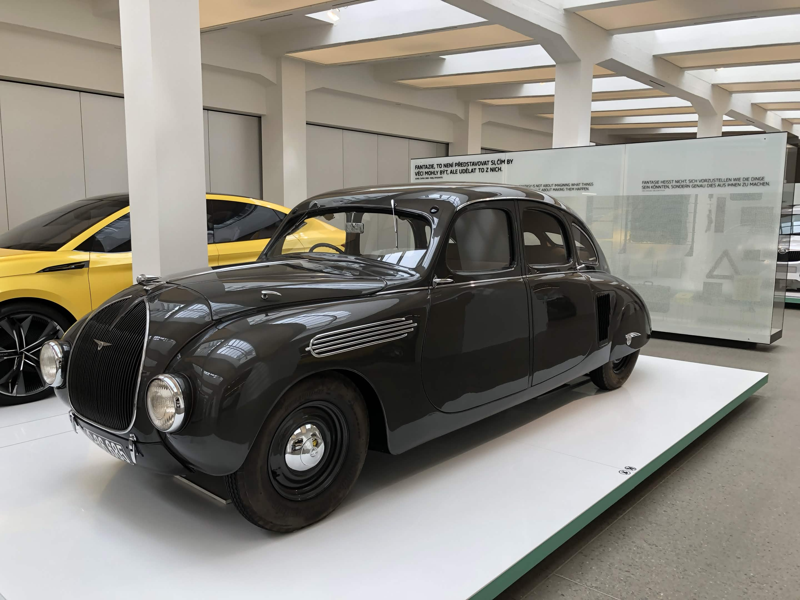

Název
Popis místa.
Městský palác Templ

Gotika v srdci města. Jeden z nejkrásnějších pozdně gotických šlechtických domů v Česku. Dnes zde najdete interaktivní muzeum, které vás provede historií Mladé Boleslavi od pravěku až po středověk.
Škoda Muzeum

Historie v pohybu. Navštivte místo, kde v roce 1895 začali Václav Laurin a Václav Klement psát historii světového motorismu. V moderních expozicích uvidíte unikátní sbírku veteránů a prototypů.